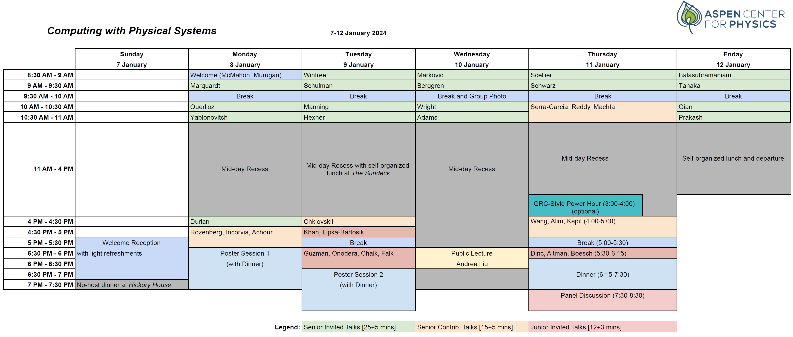

Computing with Physical Systems
Aspen Center for Physics Winter Conference, January 7-12, 2024.
Organized by:
Andrea Liu (U. Pennsylvania)
Peter McMahon (Cornell U.)
Arvind Murugan (U. Chicago)
Hakan Türeci (Princeton U.)
Conference description
There has been an explosion of interest in unconventional approaches to computing with physical systems (some recent reviews/works: [MMB2022], [SM2023], [WOG+2020], [HAK+23], [M23]). This has been driven by multiple factors, including (1) the realization that there is the potential to build vastly more energy-efficient or faster computers if we rethink how we harness physical processes for computing – giving up some of the abstractions computers have relied on for 50+ years in exchange for being able to operate closer to the fundamental limits that physics allows, and (2) the growth of machine learning – which provides both a strong motivator for more efficient machines to be built, as well as a wealth of methods that can be used to reimagine how computers work. This Aspen Winter Conference will bring together both theorists and experimentalists across a broad range of disciplines – including soft condensed matter, biological physics, neuroscience, machine learning, hard condensed matter, optics, fluid dynamics, and quantum information science – who typically do not have the opportunity to interact but who are all exploring various aspects of computing in different physical systems. Topics will include:
- Information processing and dynamics in classical and quantum systems, including (but not limited to) electronic, spintronic, optical, mechanical, fluidic, biological, and chemical systems.
- Devices, architectures, and algorithms for constructing physical machines that can learn without electronic processors.
- Fundamental limits to computing: time, energy, precision.
- Integrated sensing, computation, and actuation.
The conference will feature invited talks and discussion sessions. All participants will be invited to present posters. A welcome reception will be held on Sunday 7 January 2024, and the scientific program will take place from Monday 8 January 2024 until lunchtime on Friday 12 January 2024.
Applications
We welcome applications for participation from researchers at all career stages and encourage all participants to present a poster. Per the Aspen Center for Physics, everyone (including organizers and invited speakers) must apply to participate. If your application is accepted, you will receive a password to register. Please use the following link to the application form (application deadline: 31 August 2023). Applications are now closed.
Logistics
The scientific organizers are grateful that the logistics of the conference are largely handled by the Aspen Center For Physics. Please see here for information on travel/visas, lodging, registration, and local activities (e.g., skiing).
Location
Unless specified otherwise, all conference activities will take place at the Aspen Center for Physics, located at 700 W Gillespie Street, Aspen, CO 81611.
Posters
All conference participants are welcome (and encouraged) to present in the poster sessions. Posters will be attached to corridor walls using masking tape, so if you would like to present a poster, please keep this in mind. The largest poster size that can be accommodated is 5 ft x 5 ft (~1.5 m x 1.5 m).
Invited speakers (with talk slides and videos)
Video playlist
Benjamin Scellier (Rain AI) Training deep resistive networks with equilibrium propagation [slides]
Damien Querlioz (CNRS) Computing with Physics: the Bayesian approach [video]
Daniel Hexner (Technion) Training viscoelastic materials [video]
Danijela Marković (CNRS) Quantum neuromorphic computing with superconducting circuits [video]
Doug Durian (U. Pennsylvania) Self-learning flow networks [video]
Eli Yablonovitch (UC Berkeley) Computing with Physical Systems [video]
Erik Winfree (Caltech) Pattern recognition in the nucleation kinetics of non-equilibrium self-assembly [video]
Florian Marquardt (Max Planck Institute for the Science of Light Machine learning based on physical dynamics [video | slides]
Hidenori Tanaka (Harvard U.) Neural learning and computation as physical dynamics [video]
Jennifer Schwarz (Syracuse U.) Emergent properties of multi-mechanism learning [video]
Karl Berggren (MIT) Computing with superconducting nanowires [video]
Lisa Manning (Syracuse U.) Towards physical learning in biological tissues [video]
Logan Wright (Yale U.) Deep physical neural networks [video | slides]
Lulu Qian (Caltech)
Manu Prakash (Stanford U.) Embodied mechanical intelligence [video]
Rebecca Schulman (Johns Hopkins U.)
Ryan Adams (Princeton U.) Rethinking automatic differentiation [video]
Vijay Balasubramanian (U. Pennsylvania) The physical effects of learning [video | slides]
Other speaker slides and videos
All speakers were invited to provide their slides for download from the conference website. The following speakers, in addition to the invited speakers above, made theirs available.
Conference overview
Peter McMahon (Cornell U.) Computing with Physical Systems, Part 1: Computer Engineering [video | slides]
Arvind Murugan (U. Chicago) Computing with Physical Systems, Part 2: Biology and Physics [video | slides]
Contributed talks
Martin Falk (U. Chicago) Contrastive learning through non-equilibrium memory [slides]
Jean Anne Incorvia (U. Texas-Austin) Leveraging Physical Properties of 2D Materials for Neuromorphic Computing [slides]
Saeed Khan (Princeton U.) Physical Computing at the Quantum Limit [slides]
Tatsuhiro Onodera (Cornell U.) Programmable wave propagation for machine learning [slides]
Marcelo Rozenberg (U. Paris-Saclay) Solid State Neuroscience [slides]
Public lecture
Andrea Liu (U. Pennsylvania) How Physical Systems Can Learn By Themselves [slides]
Schedule

Schedule download (PDF)